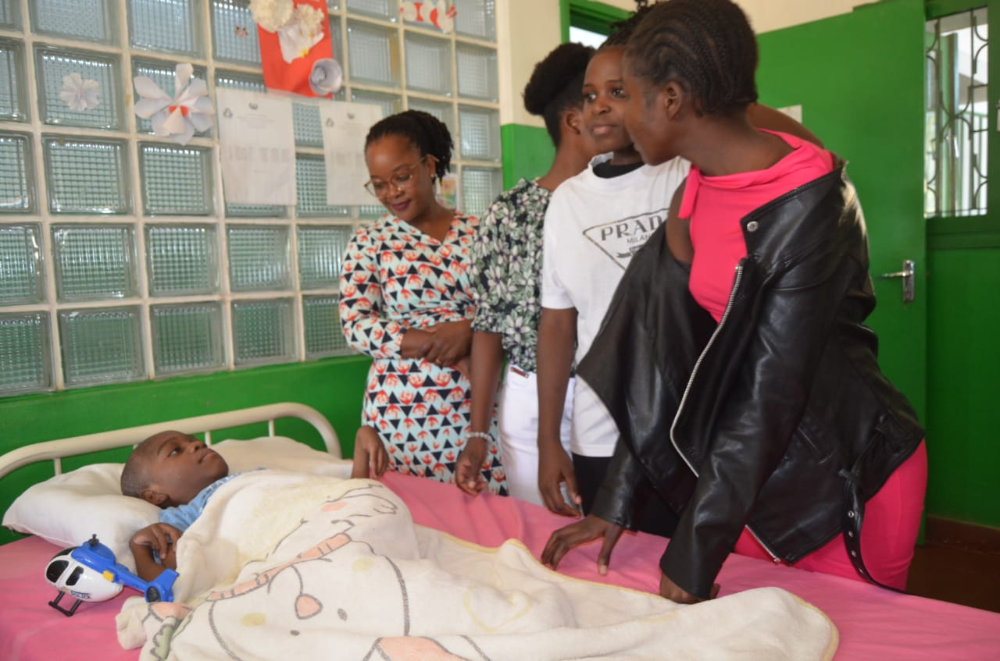
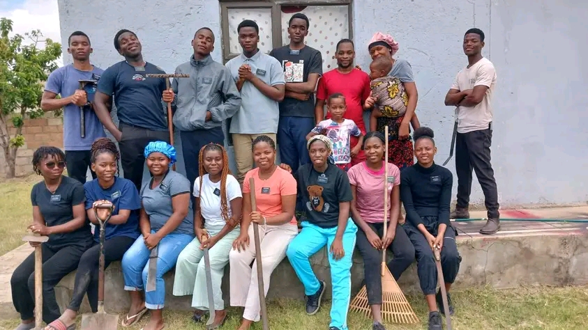
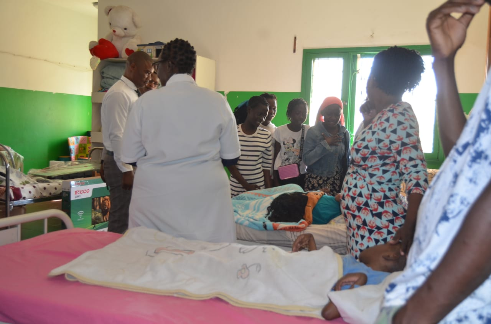
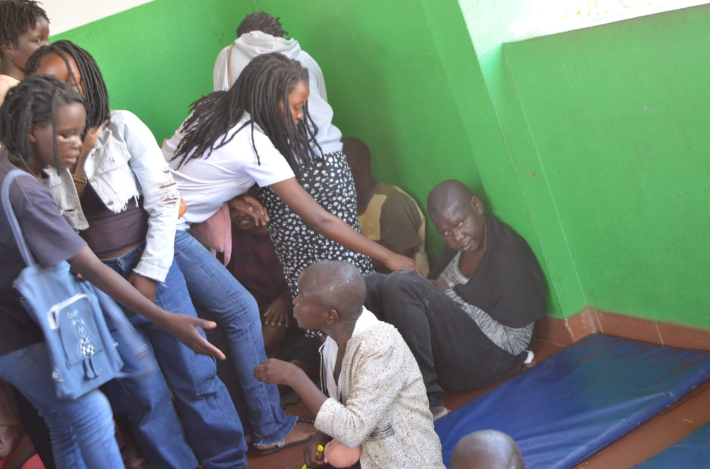
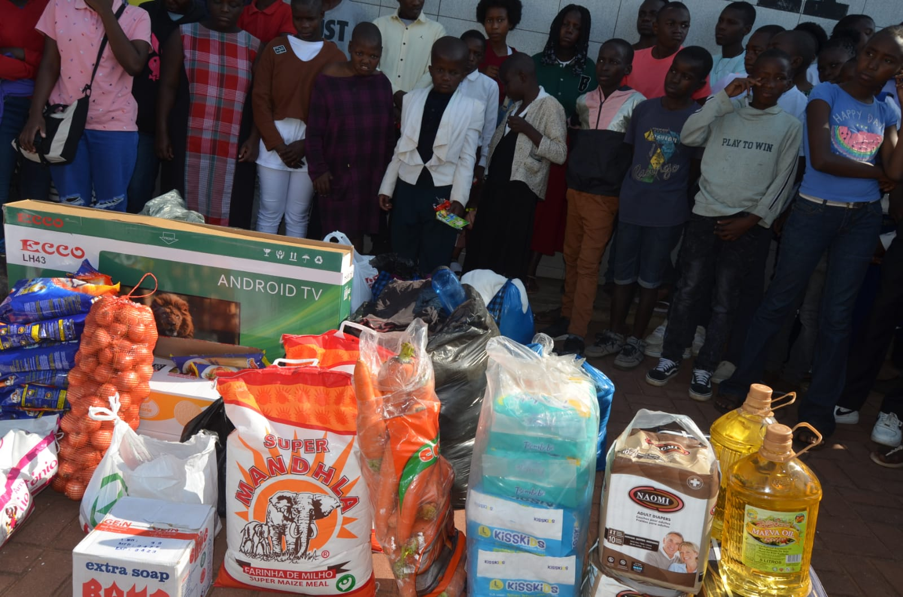

Service Opportunities
T3 Ward encourages all members to participate in service. Service is a way to show love, strengthen faith, and support the community.

Church Service
- Helping clean and maintain the church building
- Assisting during Sunday meetings
- Visiting and supporting members in need
- Helping with ward activities and events

Youth Service Opportunities
- Community cleaning projects
- Helping elderly members in the ward
- Organizing youth activities and programs
- Supporting educational and spiritual events

Family and Community Service
- Strengthening family relationships
- Helping neighbors in need
- Participating in community development projects
- Supporting local charitable activities

Why We Serve
Service is an important part of the T3 Ward community. It helps us grow spiritually, build unity, and show love to others. Every act of service, no matter how small, makes a difference.
